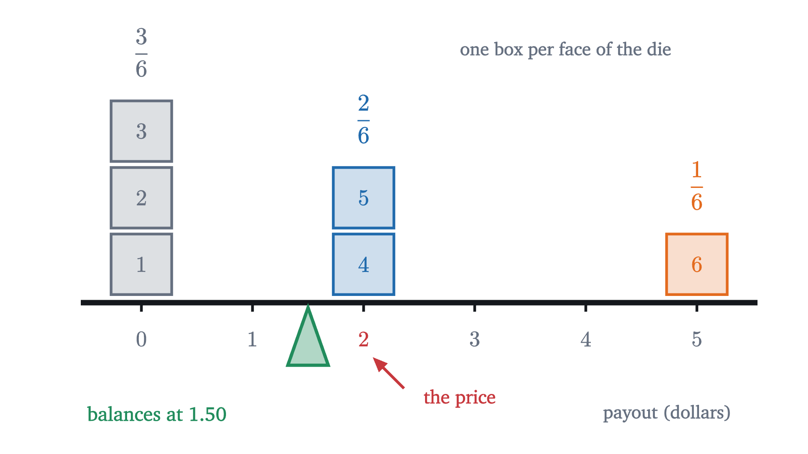
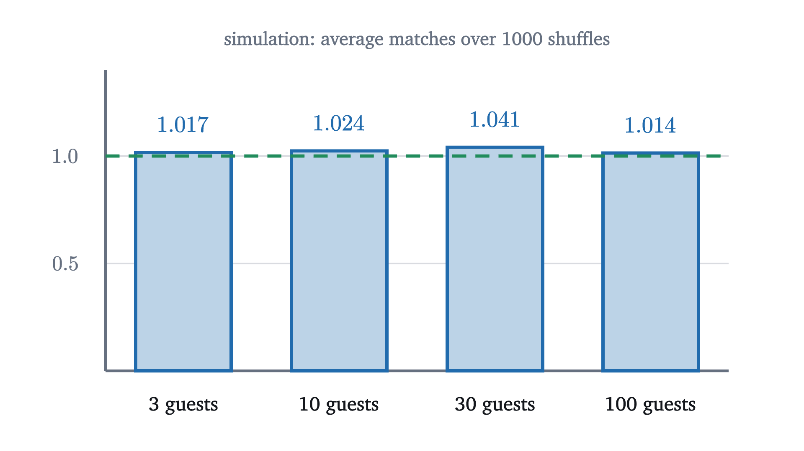

Expected value and the surprising power of adding averages
The expected value of a random quantity is its long-run average. Expected values add even for dependent quantities, which solves the hat-check problem.
AssumesWhat probability means: counting equally likely outcomes
A carnival stall offers this game. You pay $2 and roll one fair die. A 6 pays you $5, a 4 or a 5 pays you $2, and a 1, 2 or 3 pays nothing. Half the faces give you at least your money back, and one of them more than doubles it. Is the game worth playing?
One play cannot answer that. You might roll a 6 and walk away $3 richer, or roll a 2 and lose your $2, and neither result says whether the price was fair. The question has a definite answer only when it is about many plays: if you played all afternoon, would the payouts keep up with the $2 you hand over each time?
The animation above simulates 2000 plays and tracks the average payout per play. After a noisy start it stays close to $1.50. The stall takes in $2.00 per play and hands back about $1.50, so over a long afternoon you lose about fifty cents a play. This lesson is about that number: how to compute it without simulating anything, what exactly it is, and one property of it that makes some hard-looking problems short.
The long-run average is a weighted average
Here are the first 600 simulated plays, one dot per play.
The third step is the one to study. After sorting, the total of the 600 payouts is three products, one for each possible payout. Dividing by 600 turns each count into a fraction of the plays:
Now recall what probability means as a long-run frequency, from the lesson on sample spaces: over many rolls, the fraction that land on a given set of faces settles near the probability of that set. Three of the six faces pay nothing, two pay $2 and one pays $5, so the three fractions settle near $\frac36$, $\frac26$ and $\frac16$. The average payout therefore settles near
That is the level the simulation found, and we got it with no dice at all. Each possible payout is weighted by its probability and the results are added. The game costs $2.00 and returns $1.50 on average, so it is not worth playing if money is the point.
Pause and try
A different stall charges $1 to roll one die and pays you, in dollars, a quarter of the number you roll (so a 6 pays $1.50). Compute the long-run average payout. Is this game better or worse for the player than the first?
Show answerHide answer
Each face has probability $\frac16$, so the average payout is $\frac14 \cdot \frac{1 + 2 + 3 + 4 + 5 + 6}{6} = \frac14 \cdot 3.5 = 0.875$ dollars. You lose 12.5 cents per $1 play on average, or 12.5% of the stake, against 25% of the stake in the first game. The second game is better for the player and still a losing one.
Random variables and expectation
To state this precisely we need a name for “a number that depends on the outcome of a random experiment”. The payout is one. The experiment is the roll, the sample space is $\Omega = \{1, 2, 3, 4, 5, 6\}$, and the payout assigns a number to each outcome: 0 to the outcomes 1, 2, 3; 2 to the outcomes 4, 5; and 5 to the outcome 6. An assignment of a number to each outcome is a function on $\Omega$, and that is the definition.
The name “random variable” is traditional and a little misleading, because $X$ itself is a fixed function with nothing random about it. The randomness is in which outcome $\omega$ occurs. For the carnival game the definition gives
one term for each face. Earlier we grouped the faces by payout first, and wrote $0 \cdot \frac36 + 2 \cdot \frac26 + 5 \cdot \frac16$. The grouping works in general. Write $\{X = x\}$ for the event “$X$ takes the value $x$”, that is, the set of outcomes $\omega$ with $X(\omega) = x$. Collecting the terms of the sum that share the same value $x$ gives
where the sum runs over the finitely many values that $X$ takes. The list of those values with their probabilities is called the distribution of $X$. Both formulas are worth knowing. The second is the one you compute with when you know the distribution. The first, a sum over outcomes, looks clumsier, and it is the one that makes the main theorem of this lesson easy.
There is a physical picture of the second formula. Put a weight on a number line at each value of $X$, as heavy as that value is probable. The expected value is the point where the line balances.

You can check the balance by the lever rule, in which each weight counts in proportion to its distance from the pivot. Left of 1.5 there are three boxes at distance 1.5, for a total of 4.5. Right of it there are two boxes at distance 0.5 and one at distance 3.5, also 4.5.
Notice that $1.50 is not a payout the game ever makes. An expected value does not have to be a possible value. It is a center of the distribution in the balancing sense, and nothing more is promised.
Pause and try
Let $X$ be the number shown by one fair die. Compute $E[X]$. Then let $T$ be the total of two fair dice, whose distribution over the 36 equally likely outcomes is: totals 2 through 12 occur in $1, 2, 3, 4, 5, 6, 5, 4, 3, 2, 1$ ways. Compute $E[T]$.
Show answerHide answer
$E[X] = \frac{1 + 2 + 3 + 4 + 5 + 6}{6} = \frac{21}{6} = 3.5$. For two dice, $E[T] = \frac{2 \cdot 1 + 3 \cdot 2 + 4 \cdot 3 + 5 \cdot 4 + 6 \cdot 5 + 7 \cdot 6 + 8 \cdot 5 + 9 \cdot 4 + 10 \cdot 3 + 11 \cdot 2 + 12 \cdot 1}{36} = \frac{252}{36} = 7$.
Expected values add
The two answers in that exercise are related: $7 = 3.5 + 3.5$. The expected total of two dice is the sum of the expected values of the dice. That sounds like it ought to be true, and the second computation did not use it at all. It went through the whole distribution of the total, which took eleven products.
Before trusting the shortcut we should ask what it depends on. The two dice do not influence each other. Perhaps that is why their averages add, and the rule would fail for quantities that are tied together. Here is a test with two quantities that are as tied together as they could be. On a standard die, opposite faces add to 7. Roll one die, let $X$ be the number on top and $Y$ the number on the bottom. Knowing $X$ tells you $Y$ exactly.
The averages added anyway: $E[X] = 3.5$, $E[Y] = 3.5$ and $E[X + Y] = 7$. The table also shows why. To average the bottom row you add six sums and divide by 6. Each of those sums is a top-row entry plus a middle-row entry, so the twelve numbers being added are the same twelve whether you add along the rows first or down the columns first. Dependence between $X$ and $Y$ changes which entries share a column. It does not change the entries, and the grand total does not care how they are paired.
This is the general proof, with $\frac16$ replaced by arbitrary probabilities.
Read the hypotheses against the table. “On the same sample space” means the two variables are defined for the same list of outcomes, so that there are columns to add down. The proof used the definition as a sum over outcomes and the fact that finite sums can be rearranged. It never mentioned an event like $\{X = x\}$, and so it never needed to know how the values of $X$ and $Y$ occur together.
Applying the theorem repeatedly extends it to any finite number of variables: $E[X_1 + X_2 + \dots + X_n] = E[X_1] + E[X_2] + \dots + E[X_n]$. The case $b = 0$ also settles the carnival game from the player’s side. Your net gain per play is $X - 2$, so its expected value is $E[X] - 2 = -0.50$ dollars.
The hat-check problem
Here is a problem where the pieces are far easier than the whole. At a party, $n$ guests check their hats. At the end of the night the attendant, who has lost the tickets, hands the hats back in a uniformly random order, so that each of the $n!$ possible arrangements is equally likely. On average, how many guests get their own hat back?
Start with the smallest interesting case and do it completely. With three guests A, B and C there are $3! = 6$ ways to return the hats.
Counted by rows, the average number of guests who get their own hat is $\frac66 = 1$. The last two steps count the same six green cells by guest, and that count is the one that generalizes.
Pause and try
With four guests there are $4! = 24$ arrangements. Before computing anything, guess the average number of guests who get their own hat: more than 1, less than 1, or exactly 1? Then find it by counting green cells column by column, as in the last two steps of the figure.
Show answerHide answer
Look at one guest, say A. Guest A gets hat A in exactly those arrangements where the other three hats are distributed among the other three guests in any order, and there are $3! = 6$ of those. So A’s column has 6 green cells out of 24, and the same is true of each of the four columns. The table has $4 \times 6 = 24$ green cells in 24 rows, an average of exactly 1 per arrangement. (Counting by rows is harder: 9 arrangements have no match, 8 have one, 6 have two, none has three and 1 has four, and $\frac{8 + 12 + 4}{24} = 1$.)
Counting by rows means finding the distribution of the number of matches, which gets hard quickly as $n$ grows. Counting by columns never needs it. To write the column count in the language of this lesson, we want one random variable per guest, the one that records whether that guest’s cell is green.
An indicator turns a probability into an expected value, which lets linearity act on it. A count of how many of several events occur is the sum of their indicators, because each event that occurs adds 1 to the sum and each that does not adds 0.
The answer does not depend on $n$. With 3 guests or 3000, on average one person goes home in their own hat. As the party grows, each guest’s chance $\frac1n$ shrinks and the number of guests grows, and the two changes cancel exactly.
I find this result hard to believe on first meeting, so here is a check that involves no theory. The figure shuffles ten hats 2000 times and records how many guests got their own hat each time.
The average ends at 0.96 in this run. The theorem is about the expected value, and a finite run only lands near it; the runs in the next figure land a little above 1. The histogram also shows something the theorem does not say. An average of 1 does not mean that one match is what usually happens: no match at all is just as common, and two or three matches are not rare.
The last figure repeats the experiment for parties of four different sizes.

Where independence was not used
The proof never asked whether the indicators $X_1, \dots, X_n$ are independent, and they are not. Take $n = 2$. Either both guests get their own hats or they swap, so $X_1$ and $X_2$ are always equal. In the language of the lesson on conditional probability, where events $A$ and $B$ are called independent when $P(A \cap B) = P(A)P(B)$, we have $P(A_1 \cap A_2) = \frac12$ while $P(A_1)P(A_2) = \frac14$. For larger $n$ the dependence is weaker and still present: if the first $n - 1$ guests all have their own hats, the last one must too. Linearity ignores all of it.
The same freedom does not extend to products. For the top face $X$ of one die,
So $E[XY] = E[X]\,E[Y]$ can fail, here with $Y = X$. That product rule is a true theorem when $X$ and $Y$ are independent, and its proof uses the independence.
One more boundary. Our definition was for a finite sample space. When an experiment has infinitely many outcomes the expected value is an infinite series, and it may fail to converge. Flip a fair coin until the first head, and suppose the game pays $2^k$ dollars if that head arrives on flip $k$, which has probability $2^{-k}$. The series for the expected payout is $2 \cdot \frac12 + 4 \cdot \frac14 + 8 \cdot \frac18 + \dots = 1 + 1 + 1 + \dots$, which has no finite sum. This is the St. Petersburg game, and it has no expected value in our sense.
Worked examples
Common mistakes
Stepping back
The carnival question was settled by a weighted average, and that part of the lesson is bookkeeping. The harder idea is the choice between two ways of adding up the same table. Summing over the values of a complicated quantity requires its distribution, which can be out of reach. Summing over outcomes lets a total be split into pieces before any averaging is done, and then each piece can be averaged alone. For the hats, the pieces were single guests, each with an easy probability of $\frac1n$.
The method to keep is this: when asked for the expected number of something, write the count as a sum of indicators and add their probabilities. The next lesson applies it to the number of successes in $n$ repeated trials, where it gives the mean of the binomial distribution in one line.
Check yourself
A raffle sells 500 tickets at $2 each. One ticket, drawn at random, wins $400, and the others win nothing. What is the expected net gain from buying one ticket?
Problems
The first two repeat the lesson’s computations. The middle four ask you to choose the indicators yourself. The last two extend the lesson.
Problem 1
A game costs $1.50. You draw one card from a well-shuffled standard deck of 52. An ace pays $10, a jack, queen or king pays $2, and any other card pays nothing. Find the expected payout and the expected net gain.
Show solutionHide solution
There are 4 aces and 12 jacks, queens and kings. The payout $X$ takes the value 10 with probability $\frac{4}{52}$, the value 2 with probability $\frac{12}{52}$, and 0 otherwise, so
The net gain is $X - 1.5$, and by linearity $E[X - 1.5] = \frac{16}{13} - \frac{3}{2} = -\frac{7}{26} \approx -0.27$ dollars. The player loses about 27 cents per game on average.
Problem 2
Ten fair dice are rolled. Find (a) the expected total and (b) the expected number of sixes.
Show solutionHide solution
(a) The total is the sum of the ten faces, each with expected value 3.5, so by linearity the expected total is $10 \times 3.5 = 35$. (b) For each die let its indicator be 1 if it shows a six; each indicator has expected value $\frac16$. The number of sixes is the sum of the ten indicators, so its expected value is $\frac{10}{6} = \frac53 \approx 1.67$.
Problem 3
Two fair dice are rolled. Let $M$ be the larger of the two numbers and $m$ the smaller (if the dice agree, both equal the common value). (a) Find $E[M]$ from its distribution. (b) Find $E[m]$ without computing another distribution.
Show solutionHide solution
(a) $M \le k$ exactly when both dice are at most $k$, which covers $k^2$ of the 36 cells. So $M = k$ on $k^2 - (k-1)^2 = 2k - 1$ cells: 1, 3, 5, 7, 9, 11 cells for $k = 1, \dots, 6$. Then
(b) For every outcome, $M + m$ is the total of the two dice, whose expected value is 7. By linearity $E[M] + E[m] = 7$, so $E[m] = 7 - \frac{161}{36} = \frac{91}{36} \approx 2.53$. The variables $M$ and $m$ are strongly dependent, and that did not matter.
Problem 4
A standard deck of 52 cards is shuffled. You turn the cards over one at a time while calling out “ace, two, three, ..., queen, king” and then starting over, four times through. On average, how many times does the card you turn over have the rank you call?
Show solutionHide solution
For each position $i = 1, \dots, 52$ let $X_i$ be the indicator that the card in position $i$ has the rank called at position $i$. In a uniformly random shuffle the card in any fixed position is equally likely to be any of the 52 cards, and 4 of them have the required rank, so $E[X_i] = \frac{4}{52} = \frac{1}{13}$. The number of matches is $X_1 + \dots + X_{52}$, with expected value $52 \cdot \frac{1}{13} = 4$. The positions are dependent (a deck has only four aces), which linearity does not notice.
Problem 5
A fair coin is flipped 10 times. A “double head” is a pair of consecutive flips that are both heads, and overlapping pairs count separately, so HHH contains two. Find the expected number of double heads.
Show solutionHide solution
There are 9 pairs of consecutive positions: $(1,2), (2,3), \dots, (9,10)$. For each, the indicator of “both are heads” has expected value $\frac12 \cdot \frac12 = \frac14$. The number of double heads is the sum of these 9 indicators, so its expected value is $\frac94 = 2.25$. Neighboring indicators share a flip and are dependent, which again makes no difference to the sum of expectations.
Problem 6
A student claims: “A fair die shows $X$. Since $E[X] = 3.5$, the expected value of $1/X$ is $1/3.5 \approx 0.286$.” Compute $E[1/X]$ and say what went wrong.
Show solutionHide solution
From the definition,
The student applied the reciprocal to the expected value instead of to the values. Linearity allows $E$ to pass through sums and constant multiples only, and $x \mapsto 1/x$ is neither. Here the small values of $X$ produce large reciprocals (the outcome 1 alone contributes $\frac16$), which pulls the average of $1/X$ well above $1/3.5$.
Problem 7
In the hat-check problem with $n \ge 2$ guests, let $X_i$ be the indicator that guest $i$ gets their own hat and $X = X_1 + \dots + X_n$. (a) For $i \ne j$, show that $E[X_i X_j] = \frac{1}{n(n-1)}$, and compare with $E[X_i]\,E[X_j]$. (b) Use (a) and linearity to show that $E[X^2] = 2$ for every $n \ge 2$. (c) Check (b) against the table for $n = 3$.
Show solutionHide solution
(a) The product $X_i X_j$ equals 1 exactly when both guests get their own hats, so it is the indicator of $A_i \cap A_j$. That event fixes two hats and leaves the other $n - 2$ free, so it contains $(n-2)!$ arrangements and
This is larger than $E[X_i]E[X_j] = \frac{1}{n^2}$: one guest getting the right hat makes it slightly more likely that another does, since one wrong option has been removed.
(b) Expand the square: $X^2 = \sum_i X_i^2 + \sum_{i \ne j} X_i X_j$, where the second sum runs over the $n(n-1)$ ordered pairs with $i \ne j$. Since an indicator is 0 or 1, $X_i^2 = X_i$. By linearity,
(c) For $n = 3$ the six arrangements give $X = 3, 1, 1, 0, 0, 1$, so $E[X^2] = \frac{9 + 1 + 1 + 0 + 0 + 1}{6} = \frac{12}{6} = 2$.
Problem 8
Let $X$ be a random variable on a finite sample space and write $\mu = E[X]$. (a) Show that $E[X - \mu] = 0$. (b) For a real number $c$, show that $E[(X - c)^2] = E[(X - \mu)^2] + (\mu - c)^2$. (c) Conclude that $c = \mu$ is the unique number that minimizes the average squared distance $E[(X - c)^2]$.
Show solutionHide solution
(a) By linearity with the constant $-\mu$: $E[X - \mu] = E[X] - \mu = 0$. This is the balance statement: deviations above and below the mean cancel on average.
(b) Write $X - c = (X - \mu) + (\mu - c)$, where $\mu - c$ is a constant. Squaring,
Take expectations and use linearity, with $2(\mu - c)$ and $(\mu - c)^2$ as constants:
The middle term is zero by part (a).
(c) The first term on the right does not involve $c$, and the second is $(\mu - c)^2 \ge 0$ with equality only when $c = \mu$. So $E[(X - c)^2]$ is smallest exactly at $c = \mu$. The minimum value, $E[(X - \mu)^2]$, measures how spread out $X$ is around its mean. It is called the variance, and the next lesson uses it.